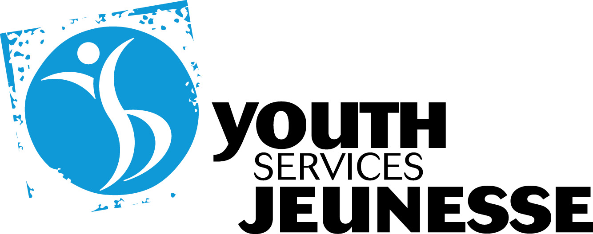
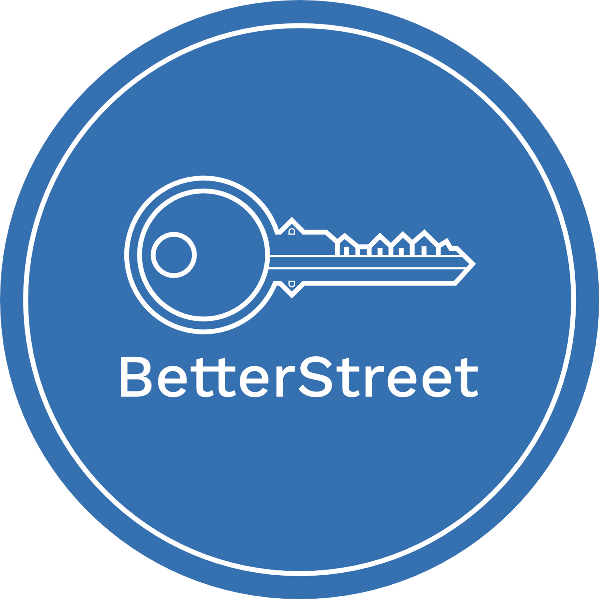
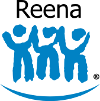

Project Partners
Seven organizations who brought the work out of the classroom and into the community — providing access, expertise, and the honest friction that makes solutions real.
HICC
The Housing, Infrastructure and Communities Canada (HICC) is the federal department responsible for Canada's National Housing Strategy and the country's homelessness policy framework. Their role in the homelessness ecosystem is to design, fund, and coordinate national responses bridging government, community organizations, and data systems. HICC operates on the principle that homelessness is a systems issue, inseparable from income inequality, housing supply, and the coordination failures between sectors. Their engagement with this course brought a policy-level perspective that grounded student projects in the realities of how national strategy is built, where it falls short, and what closing that gap requires.
VISIT WEBSITE →
Youth Services Bureau
Youth Services Bureau (YSB) is an Ottawa-based organization providing dignity-centered shelter, transitional housing, and drop-in services for youth. Their model is built on a prevention-first principle, a diversion intake process that connects youth to family support or rental assistance before shelter placement is ever considered. When shelter is needed, YSB surrounds it with integrated care: a health clinic in partnership with CHEO, mental health referrals, employment readiness programming, and peer support groups, including Purple Sisters, Spectrum, and racialized youth groups. Their goal is not simply to house young people it is to interrupt the pathway from youth homelessness into chronic adult homelessness.
VISIT WEBSITE →
BetterStreet
BetterStreet is a Canadian shelter consultancy operating at the systems level of the homelessness sector. Their role is not to run shelters; it is to strengthen the organizations that do. Through strategic consulting on recovery-oriented housing models, including tiny-home and micro shelter communities, Better Street works to professionalize and coordinate a sector that has long been under-resourced and fragmented. Their guiding principle is straightforward: the people working to end homelessness deserve the same quality of professional support as any other sector, and better-supported organizations produce better outcomes for the people they serve.
VISIT WEBSITE →Trek For Teens
Trek For Teens is a Canadian youth-led charity working at the awareness and data infrastructure layer of the homelessness sector. Their mission is to make youth homelessness visible, measurable, and actionable through school and university engagement, fundraising, and building the information resources the sector lacks. Most notably, they developed Canada's first national shelter map, filling a gap that left countless youth unable to find help that existed but could not be found. Their presence on this course reflects a core belief: that the next generation of problem-solvers must first be able to see and understand the system before they can change it.
VISIT WEBSITE →360° Kids
360° Kids is a York Region-based nonprofit and one of only a handful of organizations in Canada dedicated exclusively to youth homelessness. Their programs span the full continuum from emergency shelter and the Nightstop host model for youth aged 16–26 to transitional housing with stepped rent structures, online high school access, and employment support. Their 14-unit facility operates at full capacity every night, and their model centers on dignity, emotional well-being, and the practical development of independence.
VISIT WEBSITE →
Reena
Reena is a prominent non-profit organization dedicated to promoting dignity, individuality, independence, and community inclusion for over 1,000 individuals with diverse abilities, including autism and mental health challenges. Established in 1973 as a progressive alternative to institutions, it has grown to become the fourth-largest developmental service provider in Ontario. Rooted in Jewish culture and values while proudly supporting people of all denominations, Reena operates an extensive support network across the Greater Toronto Area. This network includes 32 group homes, specialized intentional community residences, and robust programs for residential respite, therapy, and supported employment.
VISIT WEBSITE →YorkU Community Safety
York University’s Community Safety Department employs a proactive, community-centric model to foster a secure, inclusive, and collaborative environment across its campuses. Utilizing an intersectional approach, the department provides professional security services, educational programming, and specialized resources to support the diverse needs of students, staff, and faculty. Their dedicated team prioritizes a culture shift that actively combats implicit bias and racial profiling to ensure every individual is treated with equity and respect. By engaging in ongoing training and collaborating with campus partners, they continuously adapt their security infrastructure to meet emerging safety challenges.
VISIT WEBSITE →